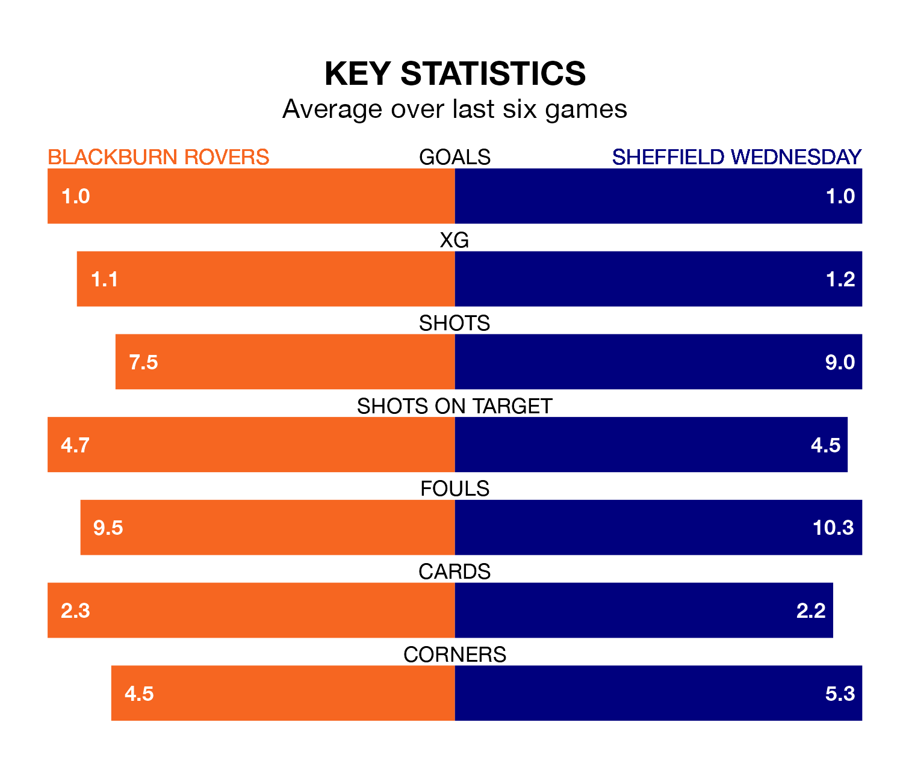

Sheffield Wednesday travel to Blackburn Rovers on Sunday lunchtime in EFL Championship.
The visitors come into the game on the back of a draw in their last match, having tied with Stoke City 1-1 at home, with a goal from Liam Palmer.
Blackburn, meanwhile, won their last match, 1-0 against Leeds United, with their goal scored by Samuel Szmodics.
Wednesday are 23rd in the table after 43 games, of which they have won 12 and drawn eight, earning 44 points.
Blackburn are six places ahead of the Owls in 17th, with 13 wins and 10 draws putting them on 49 points.
In Szmodics, Rovers have the league's sharpest shooter so far this season. He has notched 24 goals in 41 appearances.
His goal rate of one every 152 minutes is much quicker than that of Anthony Musaba, the visitors' top scorer with a goal every 399 minutes, and a total of six goals in 40 games.
In the last 10 years, Blackburn and Wednesday have played each other on 13 occasions. Blackburn won four of them, Wednesday seven, and they drew twice.
On average, Blackburn scored 1.7 goals and the Owls 1.7 in those matches.
Their last meeting was on December 2, when Wednesday won 3-1 at home.
With 36 goals in 43 games so far this season, Wednesday are the league's second-lowest scorers with 0.8 goals per game. And they are conceding more than average, letting in 67 goals at a rate of 1.6 per game.
The home side, meanwhile, are average scorers, with 1.3 goals per game. They have conceded 1.7 goals per game.
Blackburn are in mixed form in EFL Championship, with two wins and two draws from their last six games.
With a win and three draws over that period, Wednesday's form is slightly worse – they have taken six points from 18, compared to Blackburn's eight.
Updated: 11:31 (UTC), 15/04/24